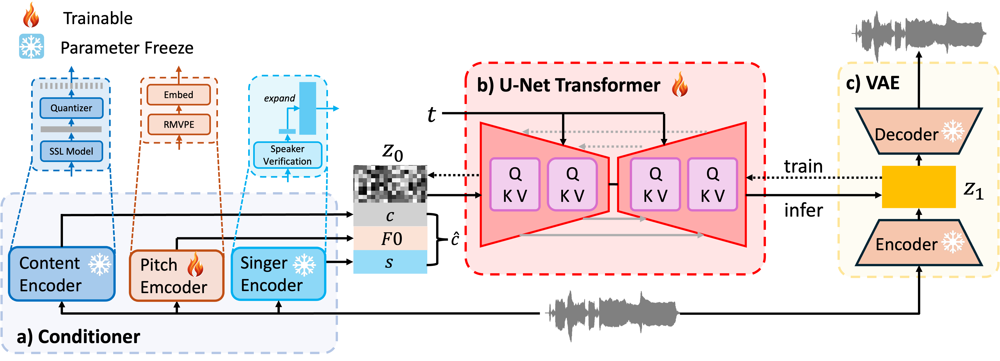

Abstract
Recent advancements in singing voice conversion (SVC) have focused on achieving zero-shot, any-to-any voice transformation capabilities. Many approaches attempt to modify voice characteristics by incorporating global timbre variables into acoustic models. However, these methods often depend heavily on the capabilities of timbre extractors and lack an understanding of temporal local information. This limitation poses challenges, particularly in replicating specific voice qualities such as those of children. To address this issue, we introduce InvoxSVC, a latent flow matching model (LFM) designed for rapid and precise singing voice conversion with a particular emphasis on capturing temporal local features. By integrating in-context learning during inference, InvoxSVC enhances the model's ability to grasp temporal nuances. Additionally, the model employs a pre-trained high-fidelity variational autoencoder (VAE) to improve waveform generation. In comparative evaluations, InvoxSVC outperforms the open-source project So-VITS-SVC in both objective and subjective assessments.

Table of Contents
- Abstract
- Notes
- Target: Girl
- Target: Boy
- Target: Female
- Target: Male